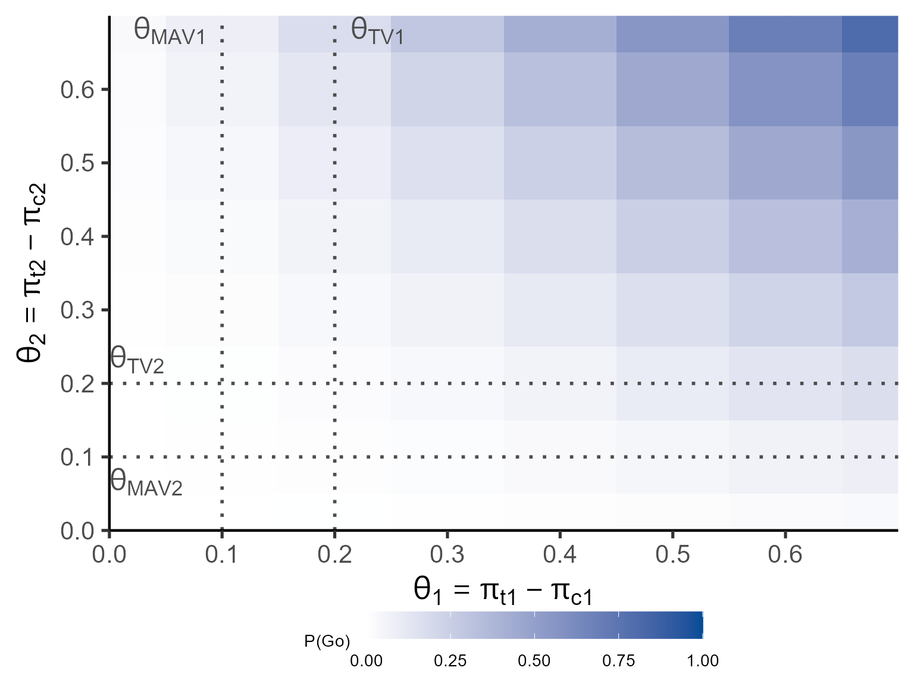
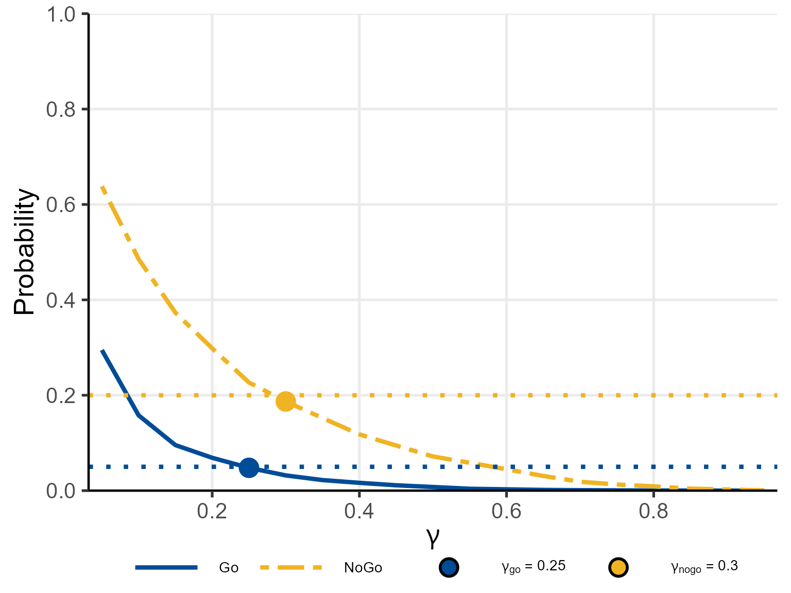

Motivating Scenario
We extend the single-endpoint RA trial to a bivariate binary design with two co-primary binary endpoints:
- Endpoint 1: ACR20 response (1 = responder, 0 = non-responder)
- Endpoint 2: DAS28 remission (1 = achieved, 0 = not achieved)
The trial enrolls patients per group in a 1:1 randomised controlled design.
Clinically meaningful thresholds (posterior probability):
| Endpoint 1 | Endpoint 2 | |
|---|---|---|
| 0.20 | 0.20 | |
| 0.10 | 0.10 |
Null hypothesis thresholds (predictive probability): , .
Decision thresholds: (Go), (NoGo).
Observed data (used in Sections 2–4): treatment group counts for the four response patterns :
| Pattern | Treatment () | Control () |
|---|---|---|
| (0, 0) | 1 | 2 |
| (0, 1) | 1 | 1 |
| (1, 0) | 2 | 2 |
| (1, 1) | 3 | 2 |
Marginal responder counts: treatment , ; control , .
1. Bayesian Model: Dirichlet-Multinomial Conjugate
1.1 Response Pattern Parameterisation
Because the two endpoints within each patient () are correlated, the bivariate binary outcome is modelled jointly through its four-cell probability vector
where denotes the treatment or control group, denotes the 3-simplex (all entries non-negative and summing to 1), and the subscripts refer to the values of .
The observed count vector with follows
The marginal response rates and treatment effects are obtained by summing:
1.2 Prior: Dirichlet Distribution
The conjugate prior for is the Dirichlet distribution:
where all hyperparameters
(corresponding to a_t_00, a_t_01,
a_t_10, a_t_11 for
and a_c_00, a_c_01, a_c_10,
a_c_11 for
).
The symmetric choice
for all
is the natural extension of the Jeffreys prior to the four-cell
multinomial and is used throughout this vignette.
1.3 Posterior Distribution
By conjugacy of the Dirichlet-Multinomial model, the posterior is:
where the posterior parameters are
The posterior mean for each cell is , where .
1.4 Within-Group Correlation
The within-group Pearson correlation between Endpoint 1 and Endpoint 2 is
When specifying operating characteristic scenarios, the true parameter vector is specified via the reparameterisation , with the feasibility constraint:
The helper function getjointbin() converts
to
:
# Convert marginal rates + correlation to cell probabilities
getjointbin(pi1 = 0.30, pi2 = 0.35, rho = 0.20)
#> p00 p01 p10 p11
#> 0.498715 0.201285 0.151285 0.148715
getjointbin(pi1 = 0.20, pi2 = 0.20, rho = 0.00) # independence
#> p00 p01 p10 p11
#> 0.64 0.16 0.16 0.041.5 Nine-Region Grid (Posterior Probability)
The bivariate threshold grid for creates a partition:
| Endpoint 1 | ||||
|---|---|---|---|---|
| θ1 > θTV1 | θTV1 ≥ θ1 > θMAV1 | θMAV1 ≥ θ1 | ||
| Endpoint 2 | θ2 > θTV2 | R1 | R4 | R7 |
| θTV2 ≥ θ2 > θMAV2 | R2 | R5 | R8 | |
| θMAV2 ≥ θ2 | R3 | R6 | R9 | |
Typical choices: Go if , NoGo if .
2. Posterior Predictive Distribution
2.1 Dirichlet-Multinomial Predictive Distribution
Let
be the future count vector with
future patients (corresponding to m_t and
m_c). Integrating out
over its Dirichlet posterior gives the Dirichlet-Multinomial predictive
distribution:
where is the multivariate Beta function and is the multinomial coefficient.
2.2 Monte Carlo Evaluation
Because the Dirichlet-Multinomial does not yield a tractable closed form for the joint probability that falls in a given region, all region probabilities are estimated by Monte Carlo:
where are draws from the Dirichlet posterior and , . For the predictive probability, future proportion differences are computed from corresponding Multinomial draws conditioned on the Dirichlet samples.
3. Study Designs
3.1 Controlled Design
Both groups are observed in the PoC trial. The posterior parameters
are updated as
,
where
and
are supplied as x_t_00, …, x_t_11 and
x_c_00, …, x_c_11.
set.seed(42)
p_post_ctrl <- pbayespostpred2bin(
prob = 'posterior', design = 'controlled',
theta_TV1 = 0.20, theta_MAV1 = 0.10,
theta_TV2 = 0.20, theta_MAV2 = 0.10,
theta_NULL1 = NULL, theta_NULL2 = NULL,
x_t_00 = 1L, x_t_01 = 1L, x_t_10 = 2L, x_t_11 = 3L,
x_c_00 = 2L, x_c_01 = 1L, x_c_10 = 2L, x_c_11 = 2L,
a_t_00 = 0.25, a_t_01 = 0.25, a_t_10 = 0.25, a_t_11 = 0.25,
a_c_00 = 0.25, a_c_01 = 0.25, a_c_10 = 0.25, a_c_11 = 0.25,
m_t = NULL, m_c = NULL,
z00 = NULL, z01 = NULL, z10 = NULL, z11 = NULL,
xe_t_00 = NULL, xe_t_01 = NULL, xe_t_10 = NULL, xe_t_11 = NULL,
xe_c_00 = NULL, xe_c_01 = NULL, xe_c_10 = NULL, xe_c_11 = NULL,
alpha0e_t = NULL, alpha0e_c = NULL,
nMC = 1000L
)
print(round(p_post_ctrl, 4))
#> R1 R2 R3 R4 R5 R6 R7 R8 R9
#> 0.174 0.075 0.133 0.075 0.025 0.083 0.149 0.069 0.217
cat(sprintf(
"\nGo region (R1): P = %.4f >= gamma_go (0.80)? %s\n",
p_post_ctrl["R1"], ifelse(p_post_ctrl["R1"] >= 0.80, "YES -> Go", "NO")
))
#>
#> Go region (R1): P = 0.1740 >= gamma_go (0.80)? NO
cat(sprintf(
"NoGo region (R9): P = %.4f >= gamma_nogo (0.80)? %s\n",
p_post_ctrl["R9"], ifelse(p_post_ctrl["R9"] >= 0.80, "YES -> NoGo", "NO")
))
#> NoGo region (R9): P = 0.2170 >= gamma_nogo (0.80)? NOPosterior predictive probability (future Phase III: ):
set.seed(42)
p_pred_ctrl <- pbayespostpred2bin(
prob = 'predictive', design = 'controlled',
theta_TV1 = NULL, theta_MAV1 = NULL,
theta_TV2 = NULL, theta_MAV2 = NULL,
theta_NULL1 = 0.15, theta_NULL2 = 0.15,
x_t_00 = 1L, x_t_01 = 1L, x_t_10 = 2L, x_t_11 = 3L,
x_c_00 = 2L, x_c_01 = 1L, x_c_10 = 2L, x_c_11 = 2L,
a_t_00 = 0.25, a_t_01 = 0.25, a_t_10 = 0.25, a_t_11 = 0.25,
a_c_00 = 0.25, a_c_01 = 0.25, a_c_10 = 0.25, a_c_11 = 0.25,
m_t = 15L, m_c = 15L,
z00 = NULL, z01 = NULL, z10 = NULL, z11 = NULL,
xe_t_00 = NULL, xe_t_01 = NULL, xe_t_10 = NULL, xe_t_11 = NULL,
xe_c_00 = NULL, xe_c_01 = NULL, xe_c_10 = NULL, xe_c_11 = NULL,
alpha0e_t = NULL, alpha0e_c = NULL,
nMC = 1000L
)
print(round(p_pred_ctrl, 4))
#> R1 R2 R3 R4
#> 0.247 0.221 0.236 0.296
cat(sprintf(
"\nGo region (R1): P = %.4f >= gamma_go (0.80)? %s\n",
p_pred_ctrl["R1"], ifelse(p_pred_ctrl["R1"] >= 0.80, "YES -> Go", "NO")
))
#>
#> Go region (R1): P = 0.2470 >= gamma_go (0.80)? NO3.2 Uncontrolled Design
When no concurrent control group is enrolled, the control distribution is specified via a hypothetical count vector combined with the Dirichlet prior:
This specification encodes prior belief about the bivariate control
response rates — including any assumed within-group correlation —
without requiring observed control data. The hypothetical counts are
supplied as z00, z01, z10,
z11.
set.seed(1)
p_unctrl <- pbayespostpred2bin(
prob = 'posterior', design = 'uncontrolled',
theta_TV1 = 0.20, theta_MAV1 = 0.10,
theta_TV2 = 0.20, theta_MAV2 = 0.10,
theta_NULL1 = NULL, theta_NULL2 = NULL,
x_t_00 = 1L, x_t_01 = 1L, x_t_10 = 2L, x_t_11 = 3L,
x_c_00 = NULL, x_c_01 = NULL, x_c_10 = NULL, x_c_11 = NULL,
a_t_00 = 0.25, a_t_01 = 0.25, a_t_10 = 0.25, a_t_11 = 0.25,
a_c_00 = 0.25, a_c_01 = 0.25, a_c_10 = 0.25, a_c_11 = 0.25,
m_t = NULL, m_c = NULL,
z00 = 2L, z01 = 1L, z10 = 2L, z11 = 1L,
xe_t_00 = NULL, xe_t_01 = NULL, xe_t_10 = NULL, xe_t_11 = NULL,
xe_c_00 = NULL, xe_c_01 = NULL, xe_c_10 = NULL, xe_c_11 = NULL,
alpha0e_t = NULL, alpha0e_c = NULL,
nMC = 1000L
)
print(round(p_unctrl, 4))
#> R1 R2 R3 R4 R5 R6 R7 R8 R9
#> 0.262 0.075 0.142 0.083 0.026 0.058 0.193 0.056 0.1053.3 External Control Design (Power Prior)
External data for group
(count vector
,
supplied as xe_t_00, …, xe_t_11 for
and xe_c_00, …, xe_c_11 for
)
are incorporated via a Dirichlet power prior with weight
(alpha0e_t, alpha0e_c). The augmented prior
parameters are:
Setting treats the external data as equivalent to current trial data; recovers the original prior. The current PoC data then update these augmented parameters:
When only the control group uses external data (external control
design), xe_t_00 through xe_t_11 and
alpha0e_t are set to NULL.
set.seed(2)
p_ext <- pbayespostpred2bin(
prob = 'posterior', design = 'external',
theta_TV1 = 0.20, theta_MAV1 = 0.10,
theta_TV2 = 0.20, theta_MAV2 = 0.10,
theta_NULL1 = NULL, theta_NULL2 = NULL,
x_t_00 = 1L, x_t_01 = 1L, x_t_10 = 2L, x_t_11 = 3L,
x_c_00 = 2L, x_c_01 = 1L, x_c_10 = 2L, x_c_11 = 2L,
a_t_00 = 0.25, a_t_01 = 0.25, a_t_10 = 0.25, a_t_11 = 0.25,
a_c_00 = 0.25, a_c_01 = 0.25, a_c_10 = 0.25, a_c_11 = 0.25,
m_t = NULL, m_c = NULL,
z00 = NULL, z01 = NULL, z10 = NULL, z11 = NULL,
xe_t_00 = NULL, xe_t_01 = NULL, xe_t_10 = NULL, xe_t_11 = NULL,
xe_c_00 = 3L, xe_c_01 = 1L, xe_c_10 = 2L, xe_c_11 = 1L,
alpha0e_t = NULL, alpha0e_c = 0.5,
nMC = 1000L
)
print(round(p_ext, 4))
#> R1 R2 R3 R4 R5 R6 R7 R8 R9
#> 0.215 0.072 0.151 0.087 0.036 0.078 0.151 0.075 0.135Sensitivity to borrowing weight :
ae_seq <- c(0.01, seq(0.1, 1.0, by = 0.1))
p_ae <- sapply(ae_seq, function(ae) {
set.seed(99)
res <- pbayespostpred2bin(
prob = 'posterior', design = 'external',
theta_TV1 = 0.20, theta_MAV1 = 0.10,
theta_TV2 = 0.20, theta_MAV2 = 0.10,
theta_NULL1 = NULL, theta_NULL2 = NULL,
x_t_00 = 1L, x_t_01 = 1L, x_t_10 = 2L, x_t_11 = 3L,
x_c_00 = 2L, x_c_01 = 1L, x_c_10 = 2L, x_c_11 = 2L,
a_t_00 = 0.25, a_t_01 = 0.25, a_t_10 = 0.25, a_t_11 = 0.25,
a_c_00 = 0.25, a_c_01 = 0.25, a_c_10 = 0.25, a_c_11 = 0.25,
m_t = NULL, m_c = NULL,
z00 = NULL, z01 = NULL, z10 = NULL, z11 = NULL,
xe_t_00 = NULL, xe_t_01 = NULL, xe_t_10 = NULL, xe_t_11 = NULL,
xe_c_00 = 3L, xe_c_01 = 1L, xe_c_10 = 2L, xe_c_11 = 1L,
alpha0e_t = NULL, alpha0e_c = ae, nMC = 500L
)
res["R1"]
})
data.frame(alpha0e_c = ae_seq, P_R1 = round(p_ae, 4))
#> alpha0e_c P_R1
#> 1 0.01 0.142
#> 2 0.10 0.164
#> 3 0.20 0.184
#> 4 0.30 0.180
#> 5 0.40 0.196
#> 6 0.50 0.208
#> 7 0.60 0.220
#> 8 0.70 0.246
#> 9 0.80 0.230
#> 10 0.90 0.228
#> 11 1.00 0.2384. Operating Characteristics
4.1 Definition
For given true parameters , the operating characteristics are computed by exact enumeration over all possible multinomial count combinations via a two-stage strategy.
Stage 1 (precomputation): all count combinations
(
combinations) and
(
combinations) are enumerated by allmultinom(). For each
pair
,
pbayespostpred2bin() computes the region probability vector
once, yielding
and
independent of any decision threshold.
Stage 2 (weighting): for given thresholds :
where , and
A Miss
(
AND
)
indicates an inconsistent threshold configuration and triggers an error
by default (error_if_Miss = TRUE). Gray comprises all
remaining outcomes.
For large
or
,
the CalcMethod = 'MC' option replaces full enumeration with
multinomial draws, deduplicates them into
unique pairs, and evaluates pbayespostpred2bin() only for
those unique pairs.
Note on computation time. The number of multinomial count combinations grows rapidly with : for patients and 4 response categories the number of combinations is , which equals 286 for and 1771 for . For the Exact method with two groups this means up to unique pairs each requiring
nMCDirichlet draws. When predictive probability is used (), an additional layer of Multinomial sampling is added inside each Dirichlet draw, further multiplying computation time. Use smallnMC(100–500) andn_t = n_c = 10for demonstration; switch toCalcMethod = 'MC'with moderatensimfor larger sample sizes.
4.2 Example: Controlled Design, Posterior Probability
pi_t_seq <- seq(0.20, 0.90, by = 0.10)
n_scen <- length(pi_t_seq)
oc_ctrl <- pbayesdecisionprob2bin(
prob = 'posterior', design = 'controlled',
GoRegions = 1L, NoGoRegions = 9L,
gamma_go = 0.80, gamma_nogo = 0.80,
pi_t1 = rep(pi_t_seq, each = n_scen),
pi_t2 = rep(pi_t_seq, times = n_scen),
rho_t = rep(0.0, n_scen * n_scen),
pi_c1 = rep(0.20, n_scen * n_scen),
pi_c2 = rep(0.20, n_scen * n_scen),
rho_c = rep(0.0, n_scen * n_scen),
n_t = 7L, n_c = 7L,
a_t_00 = 0.25, a_t_01 = 0.25, a_t_10 = 0.25, a_t_11 = 0.25,
a_c_00 = 0.25, a_c_01 = 0.25, a_c_10 = 0.25, a_c_11 = 0.25,
m_t = NULL, m_c = NULL,
theta_TV1 = 0.20, theta_MAV1 = 0.10,
theta_TV2 = 0.20, theta_MAV2 = 0.10,
theta_NULL1 = NULL, theta_NULL2 = NULL,
z00 = NULL, z01 = NULL, z10 = NULL, z11 = NULL,
xe_t_00 = NULL, xe_t_01 = NULL, xe_t_10 = NULL, xe_t_11 = NULL,
xe_c_00 = NULL, xe_c_01 = NULL, xe_c_10 = NULL, xe_c_11 = NULL,
alpha0e_t = NULL, alpha0e_c = NULL,
nMC = 200L, CalcMethod = 'Exact',
error_if_Miss = TRUE, Gray_inc_Miss = FALSE
)
print(oc_ctrl)
#> Go/NoGo/Gray Decision Probabilities (Two Binary Endpoints)
#> -----------------------------------------------------------------------------
#> Probability type : posterior
#> Design : controlled
#> Threshold(s) : TV1 = 0.2, MAV1 = 0.1
#> TV2 = 0.2, MAV2 = 0.1
#> Go threshold : gamma_go = 0.8
#> NoGo threshold : gamma_nogo = 0.8
#> Go regions : {1}
#> NoGo regions : {9}
#> Sample size : n_t = 7, n_c = 7
#> Prior (treatment): a_t = (0.25, 0.25, 0.25, 0.25) [a_00, a_01, a_10, a_11]
#> Prior (control) : a_c = (0.25, 0.25, 0.25, 0.25) [a_00, a_01, a_10, a_11]
#> Method : Exact
#> MC draws : nMC = 200
#> Miss handling : error_if_Miss = TRUE, Gray_inc_Miss = FALSE
#> -----------------------------------------------------------------------------
#> pi_t1 pi_t2 rho_t pi_c1 pi_c2 rho_c Go Gray NoGo
#> 0.2 0.2 0 0.2 0.2 0 0.0002 0.8886 0.1112
#> 0.2 0.3 0 0.2 0.2 0 0.0008 0.9381 0.0611
#> 0.2 0.4 0 0.2 0.2 0 0.0021 0.9666 0.0313
#> 0.2 0.5 0 0.2 0.2 0 0.0045 0.9810 0.0145
#> 0.2 0.6 0 0.2 0.2 0 0.0082 0.9859 0.0059
#> 0.2 0.7 0 0.2 0.2 0 0.0136 0.9845 0.0019
#> 0.2 0.8 0 0.2 0.2 0 0.0205 0.9791 0.0004
#> 0.2 0.9 0 0.2 0.2 0 0.0290 0.9710 0.0000
#> 0.3 0.2 0 0.2 0.2 0 0.0009 0.9380 0.0611
#> 0.3 0.3 0 0.2 0.2 0 0.0031 0.9637 0.0332
#> 0.3 0.4 0 0.2 0.2 0 0.0076 0.9756 0.0168
#> 0.3 0.5 0 0.2 0.2 0 0.0151 0.9772 0.0077
#> 0.3 0.6 0 0.2 0.2 0 0.0262 0.9707 0.0030
#> 0.3 0.7 0 0.2 0.2 0 0.0415 0.9575 0.0010
#> 0.3 0.8 0 0.2 0.2 0 0.0610 0.9388 0.0002
#> 0.3 0.9 0 0.2 0.2 0 0.0848 0.9152 0.0000
#> 0.4 0.2 0 0.2 0.2 0 0.0024 0.9670 0.0306
#> 0.4 0.3 0 0.2 0.2 0 0.0080 0.9755 0.0165
#> 0.4 0.4 0 0.2 0.2 0 0.0186 0.9732 0.0082
#> 0.4 0.5 0 0.2 0.2 0 0.0352 0.9611 0.0037
#> 0.4 0.6 0 0.2 0.2 0 0.0586 0.9400 0.0014
#> 0.4 0.7 0 0.2 0.2 0 0.0892 0.9104 0.0005
#> 0.4 0.8 0 0.2 0.2 0 0.1272 0.8728 0.0000
#> 0.4 0.9 0 0.2 0.2 0 0.1728 0.8272 0.0000
#> 0.5 0.2 0 0.2 0.2 0 0.0053 0.9811 0.0136
#> 0.5 0.3 0 0.2 0.2 0 0.0167 0.9761 0.0073
#> 0.5 0.4 0 0.2 0.2 0 0.0368 0.9596 0.0036
#> 0.5 0.5 0 0.2 0.2 0 0.0667 0.9317 0.0016
#> 0.5 0.6 0 0.2 0.2 0 0.1070 0.8924 0.0006
#> 0.5 0.7 0 0.2 0.2 0 0.1574 0.8424 0.0002
#> 0.5 0.8 0 0.2 0.2 0 0.2176 0.7824 0.0000
#> 0.5 0.9 0 0.2 0.2 0 0.2876 0.7124 0.0000
#> 0.6 0.2 0 0.2 0.2 0 0.0098 0.9850 0.0051
#> 0.6 0.3 0 0.2 0.2 0 0.0296 0.9677 0.0027
#> 0.6 0.4 0 0.2 0.2 0 0.0628 0.9359 0.0013
#> 0.6 0.5 0 0.2 0.2 0 0.1101 0.8894 0.0006
#> 0.6 0.6 0 0.2 0.2 0 0.1709 0.8289 0.0002
#> 0.6 0.7 0 0.2 0.2 0 0.2440 0.7560 0.0000
#> 0.6 0.8 0 0.2 0.2 0 0.3274 0.6726 0.0000
#> 0.6 0.9 0 0.2 0.2 0 0.4198 0.5802 0.0000
#> 0.7 0.2 0 0.2 0.2 0 0.0161 0.9824 0.0016
#> 0.7 0.3 0 0.2 0.2 0 0.0466 0.9526 0.0008
#> 0.7 0.4 0 0.2 0.2 0 0.0958 0.9038 0.0004
#> 0.7 0.5 0 0.2 0.2 0 0.1632 0.8366 0.0002
#> 0.7 0.6 0 0.2 0.2 0 0.2470 0.7530 0.0000
#> 0.7 0.7 0 0.2 0.2 0 0.3437 0.6563 0.0000
#> 0.7 0.8 0 0.2 0.2 0 0.4488 0.5512 0.0000
#> 0.7 0.9 0 0.2 0.2 0 0.5577 0.4423 0.0000
#> 0.8 0.2 0 0.2 0.2 0 0.0235 0.9762 0.0003
#> 0.8 0.3 0 0.2 0.2 0 0.0663 0.9335 0.0002
#> 0.8 0.4 0 0.2 0.2 0 0.1331 0.8669 0.0000
#> 0.8 0.5 0 0.2 0.2 0 0.2221 0.7779 0.0000
#> 0.8 0.6 0 0.2 0.2 0 0.3295 0.6705 0.0000
#> 0.8 0.7 0 0.2 0.2 0 0.4491 0.5509 0.0000
#> 0.8 0.8 0 0.2 0.2 0 0.5724 0.4276 0.0000
#> 0.8 0.9 0 0.2 0.2 0 0.6897 0.3103 0.0000
#> 0.9 0.2 0 0.2 0.2 0 0.0310 0.9690 0.0000
#> 0.9 0.3 0 0.2 0.2 0 0.0861 0.9139 0.0000
#> 0.9 0.4 0 0.2 0.2 0 0.1702 0.8298 0.0000
#> 0.9 0.5 0 0.2 0.2 0 0.2804 0.7196 0.0000
#> 0.9 0.6 0 0.2 0.2 0 0.4108 0.5892 0.0000
#> 0.9 0.7 0 0.2 0.2 0 0.5518 0.4482 0.0000
#> 0.9 0.8 0 0.2 0.2 0 0.6892 0.3108 0.0000
#> 0.9 0.9 0 0.2 0.2 0 0.8073 0.1927 0.0000
#> -----------------------------------------------------------------------------
plot(oc_ctrl, base_size = 20)
The same function supports design = 'uncontrolled' (with
hypothetical count vector arguments z00, z01,
z10, z11), design = 'external'
(with power prior arguments xe_c_00, …,
xe_c_11 and alpha0e_c), and
prob = 'predictive' (with future sample size arguments
m_t, m_c and theta_NULL1,
theta_NULL2). The within-group correlation
rho_t can also be varied to study its effect on the
operating characteristics. The function signature and output format are
identical across all combinations.
5. Optimal Threshold Search
5.1 Objective and Algorithm
getgamma2bin() finds the optimal pair
by the same two-stage precompute-then-sweep strategy as
pbayesdecisionprob2bin(), but sweeps over the
two-dimensional grid
(gamma_go_grid
gamma_nogo_grid). The two thresholds are calibrated
independently under separate scenarios:
-
:
calibrated under the Go-calibration scenario (
pi_t1_go,pi_t2_go,rho_t_go,pi_c1_go,pi_c2_go,rho_c_go; typically the null scenario ), so that . -
:
calibrated under the NoGo-calibration scenario (
pi_t1_nogo,pi_t2_nogo,rho_t_nogo,pi_c1_nogo,pi_c2_nogo,rho_c_nogo; typically the alternative scenario), so that .
Stage 1 (precomputation): pbayespostpred2bin() is called
for every unique multinomial outcome combination
enumerated by allmultinom(). The region probability vector
is summed over GoRegions and NoGoRegions to
obtain
and
,
independent of
.
Stage 2 (gamma sweep): for every pair :
Results are stored in
matrices PrGo_grid and PrNoGo_grid.
Stage 3 (optimal selection): for each candidate
,
the worst-case
over all
is compared against target_go; analogously for
.
5.2 Example: Controlled Design, Posterior Probability
Null scenario: , , (no treatment effect, independence).
res_gamma <- getgamma2bin(
prob = 'posterior', design = 'controlled',
GoRegions = 1L, NoGoRegions = 9L,
pi_t1_go = 0.20, pi_t2_go = 0.20, rho_t_go = 0.0,
pi_c1_go = 0.20, pi_c2_go = 0.20, rho_c_go = 0.0,
pi_t1_nogo = 0.40, pi_t2_nogo = 0.40, rho_t_nogo = 0.0,
pi_c1_nogo = 0.20, pi_c2_nogo = 0.20, rho_c_nogo = 0.0,
target_go = 0.05, target_nogo = 0.20,
n_t = 7L, n_c = 7L,
a_t_00 = 0.25, a_t_01 = 0.25, a_t_10 = 0.25, a_t_11 = 0.25,
a_c_00 = 0.25, a_c_01 = 0.25, a_c_10 = 0.25, a_c_11 = 0.25,
theta_TV1 = 0.20, theta_MAV1 = 0.10,
theta_TV2 = 0.20, theta_MAV2 = 0.10,
theta_NULL1 = NULL, theta_NULL2 = NULL,
m_t = NULL, m_c = NULL,
z00 = NULL, z01 = NULL, z10 = NULL, z11 = NULL,
xe_t_00 = NULL, xe_t_01 = NULL, xe_t_10 = NULL, xe_t_11 = NULL,
xe_c_00 = NULL, xe_c_01 = NULL, xe_c_10 = NULL, xe_c_11 = NULL,
alpha0e_t = NULL, alpha0e_c = NULL,
nMC = 200L,
gamma_go_grid = seq(0.05, 0.95, by = 0.05),
gamma_nogo_grid = seq(0.05, 0.95, by = 0.05)
)
plot(res_gamma, base_size = 20)
The same function supports design = 'uncontrolled' (with
pi_t1_go, pi_t2_go, rho_t_go,
pi_t1_nogo, pi_t2_nogo,
rho_t_nogo; set pi_c*_go and
pi_c*_nogo to NULL),
design = 'external' (with power prior arguments), and
prob = 'predictive' (with theta_NULL1,
theta_NULL2, m_t, and m_c). The
calibration plot and the returned
gamma_go/gamma_nogo values are available for
all combinations.
6. Summary
This vignette covered two binary endpoint analysis in BayesianQDM:
- Bayesian model: Dirichlet-Multinomial conjugate, modelling the bivariate binary outcome through the four-cell probability vector (). Posterior update: . The symmetric Jeffreys-type prior is recommended.
- Within-group correlation: parameterised via
using the moment-matching identity; feasible range enforced by
getjointbin(). - Nine-region grid for posterior probability and four-region grid for predictive probability, identical in structure to the two continuous endpoint case.
- Monte Carlo evaluation of region probabilities via Dirichlet draws; no closed-form expression for the joint probability exists in the bivariate binary case.
- Three study designs: controlled design (standard posterior update), uncontrolled design (hypothetical count vector fixes the control Dirichlet distribution), external control design (Dirichlet power prior with ).
- Exact operating characteristics: two-stage precomputation over all
multinomial count combinations via
allmultinom(), with multinomial probability weighting (no outer Monte Carlo needed for small ). - Optimal threshold search: three-stage precompute-then-sweep in
getgamma2bin(), producing matricesPrGo_gridandPrNoGo_grid, visualised as contour plots.
See vignette("overview") for a comparison across all
four endpoint types.